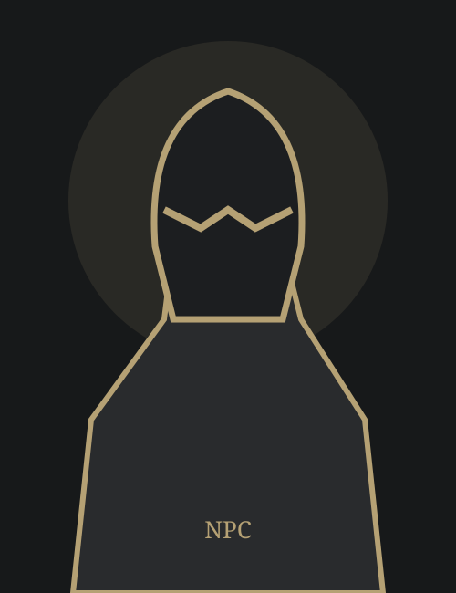

Nancy, a Cascuda
Pônei RústicoTaverneira de personalidade forte. Ajudou o grupo a reunir informações, ofereceu a primeira missão e conhece caminhos por baixo de Norba. Sua taverna tem algo peculiar que interfere em magia.
Barnabé, o Sanguessuga
Contato subterrâneoOsteon de aparência marinha e capitão de marujos mortos-vivos. Encontrado em uma taverna clandestina nos esgotos. Conhece Nancy e ofereceu ajuda para sair de Norba pelos túneis.
Lyra
DesaparecidaJovem suraggel e conhecida de Vaelith. Desapareceu após investigar registros antigos. O grupo seguiu pistas de sua passagem pelo subterrâneo.
Tharlán, o Comerciante
MercadoComerciante de Norba. Os aventureiros o procuraram ao chegar à cidade e receberam indicações que os levaram ao Pônei Rústico.
Alandor, o Prefeito
Autoridade localPrefeito de Norba. Grace e Gahliel tentaram obter informações em conversas com ele durante os primeiros momentos na cidade.
Rotho, o Bardo
Pônei RústicoGoblin bardo que se apresentaria na taverna. Gahliel o conheceu ao sair do banco; Grace teve um encontro curioso com seu chapéu.
Dicfos Mão Dourada
Balde D’OuroBanqueiro de Norba. Gahliel conversou com ele durante sua visita ao banco, buscando informações na cidade.